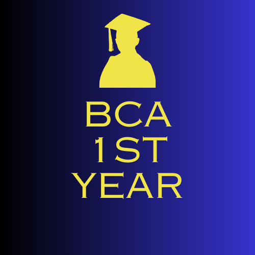
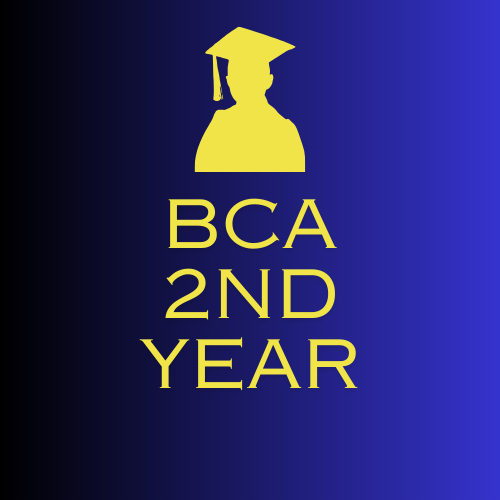
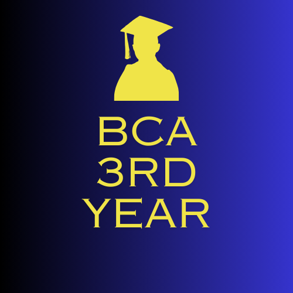

<!--Css file link-->
<link rel="stylesheet" href="BCA.css">


<!--Start BCA Department Director Details-->
<section class="section1-Directore-details">
<h1>BCA And MCA Department</h1>
<p class="p1">Director</p>

<p class="p2">Dr.Rachna Verma</p>
<p class="p3">Department of Computer Science</p>
</section>
<!--End BCA Department Director Details-->

<!--Section2 BCA Details Start-->
<section class="section2-BCA-Details">
<h2>BACHELOR OF COMPUTER APPLICATIONS (BCA)</h2>
  <p class="p4"> General Information for Students</p>

<p class="p5">
    1. The course of study of Bachelor of Computer Applications shall extend over a period of 
    three years. On satisfactory completion of the course and after passing the examinations 
    including the project and seminars, a candidate will be awarded the BCA.<br>
    <br>
    2. The candidate must pass (10+2) at school level. The Candidate can come from any 
    stream with at least 45% marks in aggregate (40% marks in case of SC/ST and OBC 
    candidates.)<br>
    <br>
    3. The term of regular course of study means that a candidate shall have attended 75% of 
    total number of lectures and course work (Tutorial) in each written paper and 75% of the 
    course work (Practical and Sessional) as per teaching and examination scheme in each 
    year. Further he/she shall have completed his/her project and seminar successfully. The 
    attendance requirement scheme be as per Ordinance of the University which is 
    reproduced below :-<br>
    <br>
    O. 78-A (1): For all regular candidates in the faculties of Arts, Education and Social 
    Sciences, Science, Law, Commerce and Engineering the minimum attendance 
    requirement shall be that a candidate should have attended at least 75% of the lectures 
    delivered and the tutorials held taken together as well as 75% of the practicals and 
    session from date of her/his admission.<br><br>
    
    (2) Condonation of shortage of attendance: The shortage of attendance up to the limits 
    specified below may be condoned on valid reasons:<br><br>
    (i) Upton 6% in each subject plus 5 attendances in all aggregate of subject/papers 
    may be condoned by the Vice-Chancellor on the recommendation of the 
    Dean/Director/Principal for undergraduate students and on the recommendation 
    of the Head of the Department for the Post-graduate classes.<br><br>
    (ii) The NCC/NSS cadets sent out to parades and camps and such students who are 
    deputed by the University to take part in games, athletics or cultural activities 
    may for purposes of attendance be treated as present for the days of this 
    absence in connection with the aforesaid activities and that period shall be added 
    to their subject wise attendance.<br><br>
    4. For a pass, a candidate must obtain at least 36% marks in each theory paper and 40% 
    marks in each practical and sessional. Overall in aggregate a candidate must score 40% 
    marks. <br><br>
    5. (a) If a candidate fails in not more than three papers in first year examination and obtains 
    40% marks in aggregate, he/she shall be allowed to be a regular candidate in the 
    second year. For the purpose of this clause each theory paper and each practical shall 
    be counted as a separate paper.<br><br>
    (b) If a candidate, fails in not more than three papers inclusive of first year and second 
year he/she shall be allowed to be a regular candidate in the third year. <br><br>
(c) If a candidate has cleared all the papers of first & second year, and has failed in not 
more than three papers of third year he/she shall be eligible for supplementary 
examination that will be held after declaration of result of third year. <br><br>
(d) All those candidates who are unable to clear their back papers from first year & 
second year with third year regular examination shall not be eligible for supplementary 
examination. Such candidate will have to wait for a year & he/she will have to appear for 
these back papers along with the regular examination of first & second years along with 
all papers of third year respectively. <br><br>
6. Ex - students:<br>
(a) If a student fails in more than three papers of theory in the annual examination, but pass 
in all the practicals, he/she shall be allowed to appear as ex-student only in theory 
examination. The marks secured in the practicals and course work, laboratory 
sessionals of the last year shall be carried over to the next examination.<br><br>
(b) If a candidate fails in more than three papers of theory and practical at the annual 
examination, then he/she shall appear as an ex-student at the next year examination in 
all theory papers, practicals and sessionals.<br><br>
 7. The actual marks obtained in due paper examination will be considered for awarding 
the division but name will not be included in the merit list.<br><br>
8. Award of Division:<Br>
The division given below shall be awarded on the basis of the total marks obtained from 
first to third year (all taken together) by the candidate for the degree of 
BCA.<br><br>
1. Honours 75% and above<br>
2. First Division 60% and above<br>
3. Second Division 45% and above<br>
4. Pass Division 40% and above <br>
9. A candidate shall be allowed to appear as an ex-student for a maximum of two 
consecutive years. If the candidate is unable to pass the examination in two consecutive 
years, he/she will neither be allowed to continue his studies in BCA course nor to reappear at the same examination.
</p>
</section>
<!--Section2 BCA Details End-->

<!--Start Section3 BCA Function-->

<section class="section3-details">
    <h1 class="h1"><span>B</span>CA Function</h1>
        <a href="Director-Details.html">Director</a>
        <a href="BCA-Admin.html">Admin</a>
        <a href="BCA-teachers-details.html">Teachers</a>
        <a href="Students.html">Students</a>
</section>

<!--End Section3 BCA function-->      

<!---BCA Section4 Will be Start-->
<!--BCA Department Start-->
<section class="BCA-Part">
    <div class="title">
        <h1 class="titleText"><span>B</span>CA Degree</h1>
        
    </div>
    <div class="Super_Box">
        <div class="inner_box">
                <div class="img-Box">
                    
                </div>
                <div class="heading">
                    <a href="BCA_1st_year.html" class="btn">BCA 1st Year</a>
                </div>
        </div>

        <div class="inner_box">
                <div class="img-Box">
                    
                </div>
                <div class="heading">
                    <a href="BCA_2nd_year.html" class="btn">BCA 2nd Year</a>
                </div>
        </div>

        
        <div class="inner_box">
            <div class="img-Box">
                
            </div>
            <div class="heading">
                <a href="BCA_3rd_year.html" class="btn">BCA 3rd Year</a>
            </div>
    </div>
    </div>
</section>

<!---BCA Section4 Will be End-->
<!--End BCA Department-->

<!--Section5 BCA Courses End-->

<!-- <h1 class="h1"><span>D</span>etails</h1> -->
<section class="section5-details">
    <h1 class="h1"><span>D</span>etails</h1>
        <a href="BCA-Time-Table.html">Time Table</a>
        <a href="https://jnvuiums.in/(S(eardtv2hytuw1mps32usjwaq))/Results/ExamResult.aspx">Result</a>
        <a href="Admission-details.html">Admission Process</a>
        <a href="BCA-SYllabus.pdf">Syllabus</a>
        <a href="./library.html">Library</a>
</section>
 


<!--End  Section5 BCA Details-->
